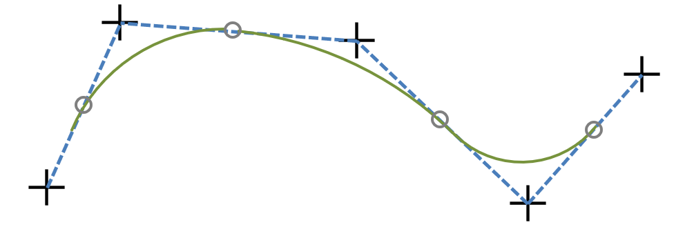

漫游路径的定义
漫游路径是由一系列有序的关键点定义的。场景中每一个挂载有Trail组件的节点都会被视为一个有效的漫游路径对象，节点的直接子节点就是该路径的关键点。用户操作软件时，只需要选中并编辑各个节点就能改变漫游路径的形状。添加或者删除节点即可改变漫游路径的长短。
漫游路径的插值
每当路径对象子节点发生改变，Trail组件就会重新计算其下的关键点的位置、旋转，并插值形成一条连续的轨迹。轨迹的插值方式是分段二次贝塞尔曲线：

首/末节点到其相邻节点的一半形成处使用线性插值，而对于非首/末节点，以该节点与前后节点的中点和该节点自身为控制点构造二次贝塞尔曲线。这样能够保证曲线处处连续且一阶导数连续。
Trail.cpp:
glm::mat4 Trail::interpolate(float t)
{
int tf = keypoints.size() - 1;
assert(t >= 0 && t <= tf);
if (t <= 0.5f) {
return slerp(keypoints[0], keypoints[1], t);
}
if (t >= tf - 0.5f) {
return slerp(keypoints[tf], keypoints[tf - 1], tf - t);
}
int tc = (int)round(t);
glm::mat4 start = slerp(keypoints[tc - 1], keypoints[tc], 0.5f);
glm::mat4 end = slerp(keypoints[tc + 1], keypoints[tc], 0.5f);
glm::mat4 center = keypoints[tc];
float lerpT = (t - (tc - 0.5f));
glm::mat4 k1 = slerp(start, center, lerpT);
glm::mat4 k2 = slerp(center, end, lerpT);
glm::mat4 res = slerp(k1, k2, lerpT);
return res;
}
漫游路径的渲染
Trail组件会自动在同节点上挂载LineRenderer组件，每当路径发生更改时，Trail组件会通知LineRenderer，并按一定间隔重新采样路径得到一系列顶点，更新LineRendererd的顶点缓冲。这样任何对路径的修改都能实时在画面上显示出来。
 1.8.11
1.8.11